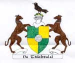
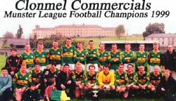
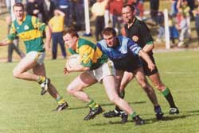
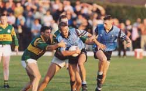

GAA

Clonmel Commericals is the main GAA club in Clonmel.Clonmel Commercials was founded in 1932. Clonmel Commercials have enjoyed frequent success in all grades of football since. Twelve years after their formation the club's famous green and gold jersey's had been carried to victory on the playing fields all over Tipperary and had won south and county titles in all grades. The club's first taste of county success came in the form of a minor title in 1935. A county junior title followed in 1940 before the first of the club's 13 senior titles in 1944. The captain on that occasion was the legendary Sean Cleary who went on to captain Clonmel Commercials in their next two victories in 1948 and 1956. Arguably the club's greatest achievement was winning three county titles in a row in 1965, 1966 and 1967. The captain on all three teams was the late Brian O'Callaghan.
The club's two county titles of the nineties came in 1990 and 1994. On both these occasions Clonmel Commercials were beaten in the Munster club final. 1994 was the club's fourth appearance in the provincial final. They have yet to succeed in lifting this elusive title. In 1990 they came closest to winning the title only to loose out after a replay and extra time to Dr.Crokes.
In April 1999 Clonmel Commercials became the inaugural Munster Club League champions when they defeated close rivals Fethard in the final played at Clonmel.

The club caters for teams from under 8 to senior level. Clonmel Commercials take pride in the fact that they compete in the "A" grade in all competitions. A very active juvenile section of the club ensures a busy time for all club members. South and county titles have been won at all underage levels and the club is well represented on all county teams at underage and juvenile level.

Michael O Mahony and Colm McMenamin were both members of the Tipperary junior football team which won the All-Ireland title in 1998.
